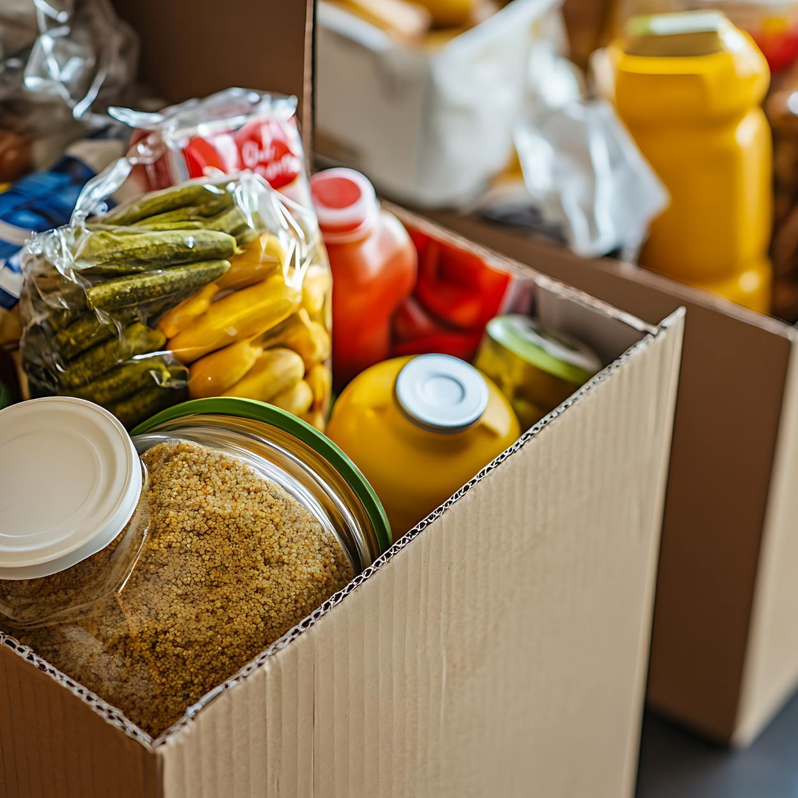
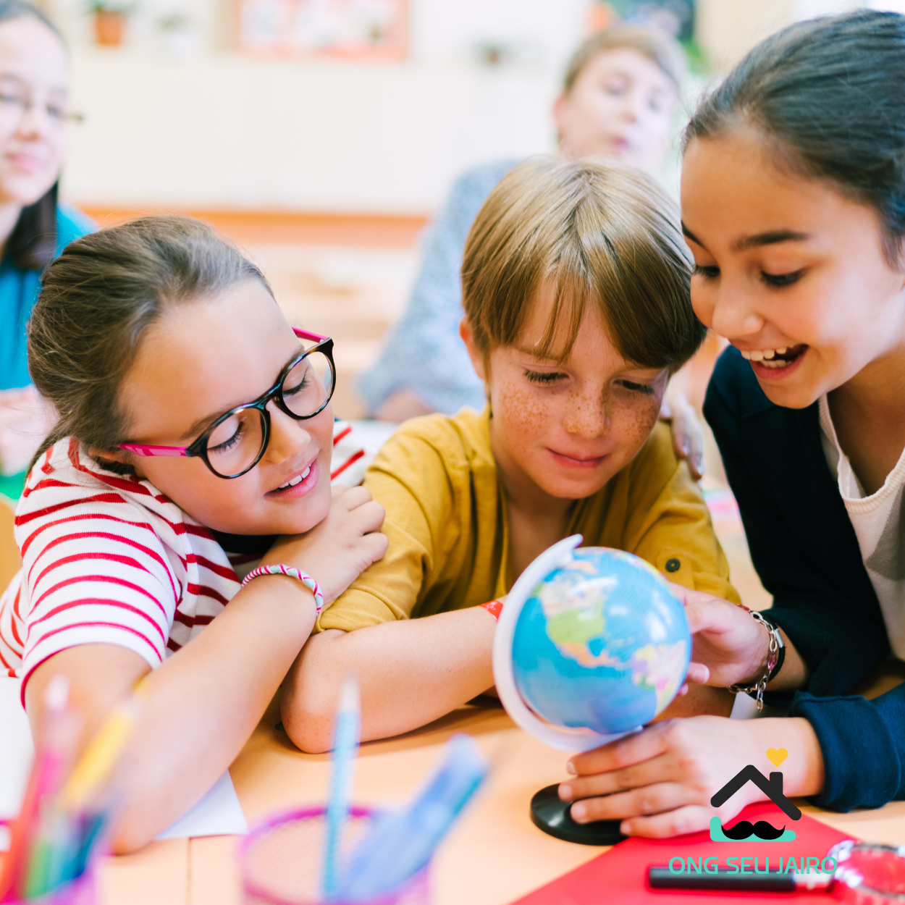
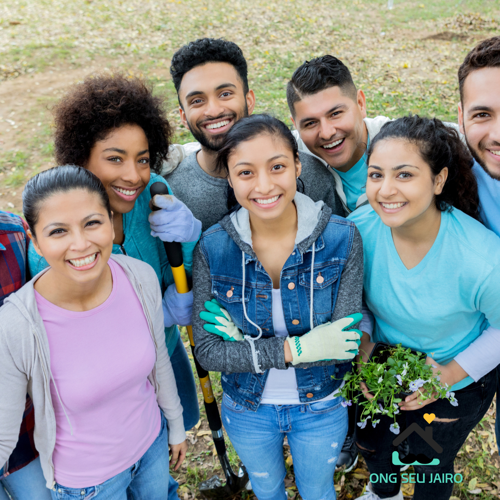

Projeto Cesta Solidária
Nosso principal projeto arrecada e distribui cestas básicas para famílias em situação de vulnerabilidade social. Cada doação representa uma mesa cheia e um coração mais tranquilo. 💛

Projeto Educação para o Futuro
Acreditamos que a educação é a base de um futuro melhor. Oferecemos apoio escolar e oficinas educativas para crianças e adolescentes, estimulando o aprendizado e a esperança.
Projeto Saúde e Bem-estar
Promovemos campanhas de saúde, vacinação e orientações básicas sobre higiene e prevenção de doenças para as comunidades. Cuidar do corpo é também cuidar da alma. 💚

Projeto Verde Esperança
Com foco na sustentabilidade, realizamos ações de plantio de árvores, reciclagem e limpeza de espaços públicos, incentivando o cuidado com o meio ambiente e o respeito à natureza. 🌱